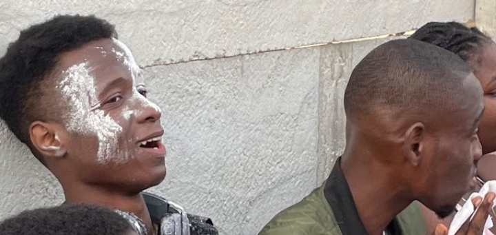
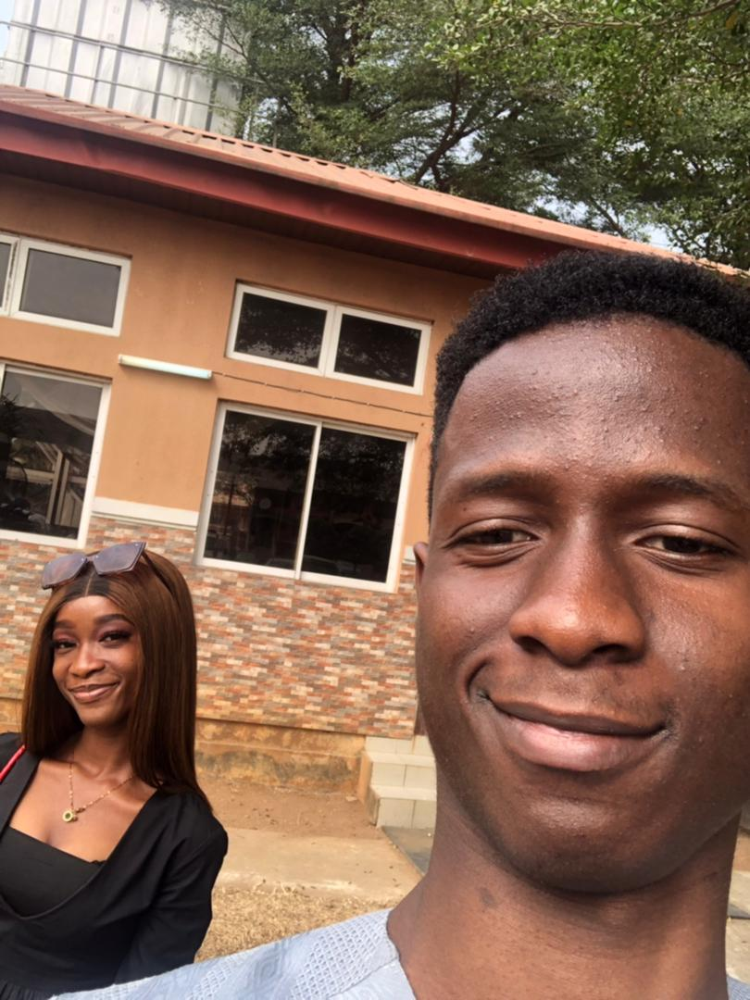
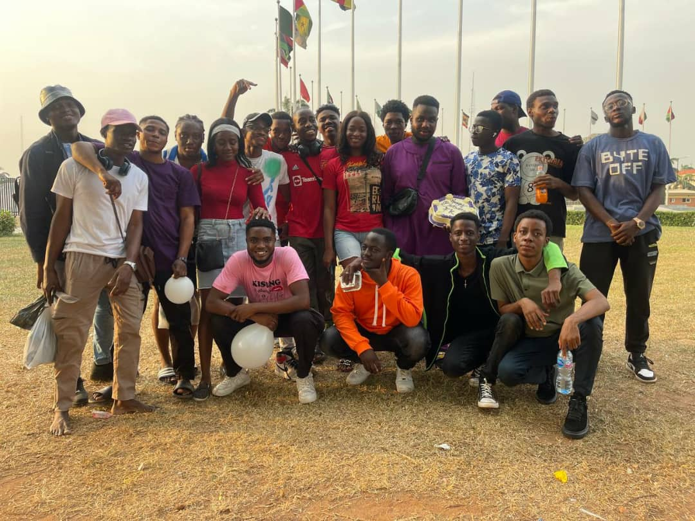
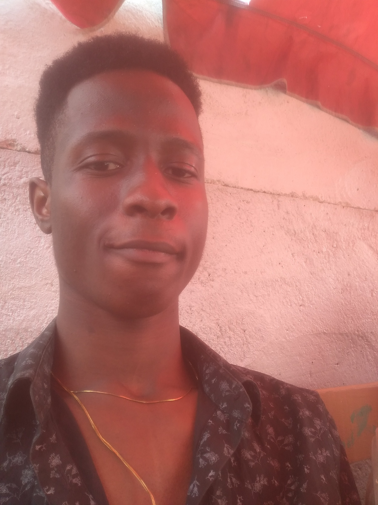

AWOYEMI ABIOLA EMMANUEL

Hello, I'm Awoyemi Abiola Emmanuel, I specialize in Front-end web development, with three years of experience building functional, aesthetic and user-friendly interfaces by utilizing web technologies such as HTML5, CSS3, and JavaScript, as well as web development tools and libraries like Git, SASS/SCSS and GSAP. My Core Strengths as a Front-end Developer are Dedication to my work, Creativity, and attention to detail.
I've listed some of my SKILLS below
- Web Development Fundamental Technologies : HTML5, CSS
- Javascript CSS Preprocessors Javascript Frameworks and Libraries : ReactJS, Jquery, GSAP Javascript Animation Library.
- Responsive Web Development
- Frameworks and Libraries : SCSS/SASS, Tailwind, Bootstrap.
- Version Control with Git and Github
I've also listed some of my ACHIEVEMENTS AND AWARDS below
- Responsive Web Design - Freecodecamp.org - April, 2022
- Beta Student Ambassador Certificate - Microsoft Learn Student Ambassadors. -2021
- Google Africa Developer Scholarship, Android Development Track Finalist. -2020
- Certified Network Security Specialist, International CyberSecurity Institute, UK Course Completion Certificate. -2020
And Finally, here's a little GALLERY of my photos with friends!


